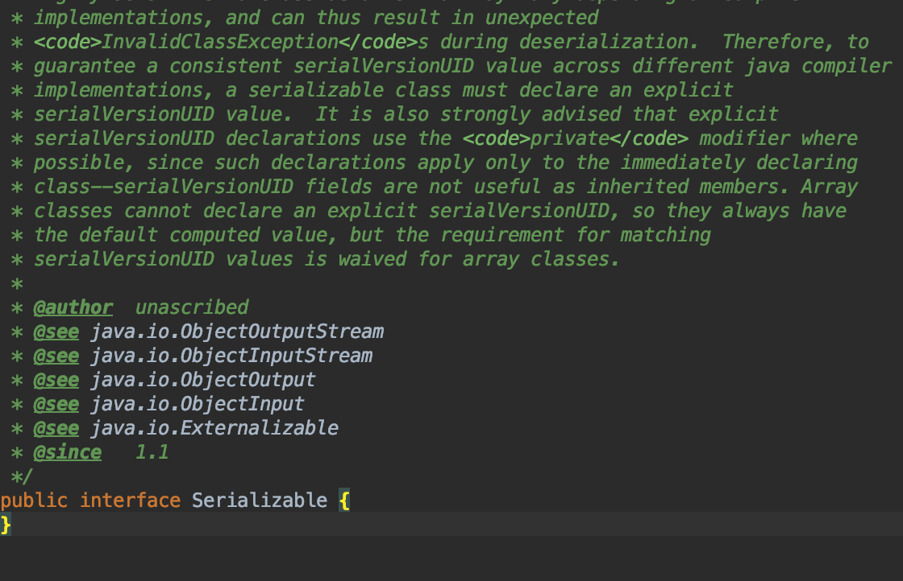

서론
아무 메서드도 담고 있지 않고, 단지 자신을 구현하는 클래스가 특정 속성을 가짐을 표시 해주는 인터페이스를 마커 인터페이스라고 한다.
Serializeable 인터페이스가 가장 좋은 예이다.

아무런 메서드도 없다.
단지 타입 정보만 알려주는 인터페이스이다.
마커 인터페이스의 장점
- 마커 인터페이스는 이를 구현한 클래스의 인스턴스들을 구분하는 타입으로 사용가능하다.
(마커 애너테이션은 그렇지 않다.) - 마커 인터페이스는 컴파일타임에 오류를 발견할 수 있다.
(마커 애너테이션은 런타임에 발견된다.) - ObjectOutputStream.writeObject 메서드는 파라미터에 Serializeable 인터페이스를 구현한 파라미터가 와야한다.
- Serializeable를 구현한 파라미터가 와도 컴파일 에러는 나지 않는다.
- 하지만 런타임에 Serializeable 타입이 아니라는 에러를 발생 시킨다.
- 적용 대상을 더 정밀하게 지정할 수 있다.
- 적용 대상을 @Target(ElementType.TYPE)으로 선언한 애너테이션은 모든 타입(클래스, 인터페이스, 열거타입, 애너테이션)에 달 수 있다.
- 부착 할 수 있는 타입을 더 세밀하게 제한하지 못한다.
- 마커 인터페이스의 경우 그냥 마킹하고 싶은 클래스에만 그 인터페이스를 구현하면 된다.
그러면 마킹된 타입은 자동으로 그 인터페이스의 하위타입이 보장된다.
- 마커 인터페이스는 객체의 특정 부분을 불변식으로 규정하거나,
그 타입의 인스턴스는 다른 클래스의 특정 메서드가 처리 할 수 있다는 사실을 명시하는 용도로 사용 할 수 있다.
(Serializeable 인터페이스가 ObjectOutputStream이 처리할 수 있는 인스턴스이듯이)
마커 애너테이션의 장점
- 거대한 애너테이션 시스템의 지원을 받는다.
- 애너테이션 기반의 프레임워크에서는 마커 애너테이션을 쓰는 쪽이 더 나을 수 있다. (일관적이어서)
- 클래스, 인터페이스 외의 프로그램 요소 (모듈, 패키지, 필드, 지역변수)에 마킹해햐 할 때는 마커 인터페이스를 쓸 수 없으니
마커 애너테이션을 사용할 수밖에 없다.
요약
- 마커 인터페이스와 마커 애너테이션은 각자의 쓰임이 있다.
- 새로 추가하는 메서드 없이 단지 타입 정의가 목적이라면 마커 인터페이스를 선택하자
- 마커 애너테이션을 사용할 때 @Target(ElementType.TYPE)인 마커 애너테이션을 작성하고 있다면,
마커 애너테이션을 정말 사용해야 하는지? 마커 인터페이스를 사용할 수 있는지 생각해보고
웬만하면 마커 인터페이스를 사용하도록 하자
참고
- Effective Java 3rd Edition - Item 41. 정의하려는 것이 타입이라면 마커 인터페이스를 사용하라